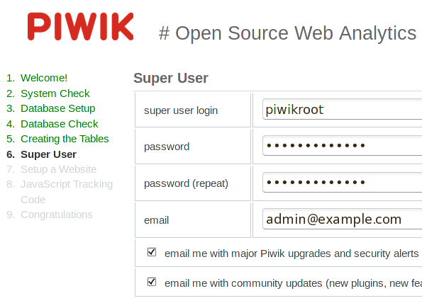
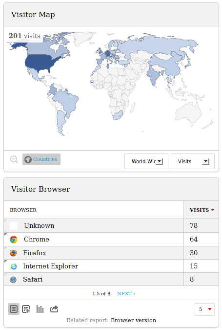

Piwik (http://piwik.org/) is an open source web analytics platform which supports Icecast's log format, in Piwik version 2.0 or later. For your convenience, packages of Piwik for Debian and Ubuntu are provided in the http://apt.sourcefabric.org repository. If you have already configured your LibreTime server for this repository, you can install the piwik package and its dependencies with the command:
sudo apt-get install piwik php5-geoip php5-cli mysql-serverFor security reasons, you should set a strong root password for the MySQL server. If you have not set a MySQL root password already, you should be promoted to do this during the installation of the mysql-server package.
Database and web server configuration
Piwik uses a MySQL database which must be created manually before you can use the Piwik web interface.
-
Log into the database management system with the root password that you set for the MySQL server:
mysql -uroot -p Enter password:
The server should respond with:
Welcome to the MySQL monitor. Commands end with ; or \g.
Type 'help;' or '\h' for help. Type '\c' to clear the current input statement.
mysql>-
At the mysql command prompt, create a database named piwik with the command:
CREATE DATABASE
piwik/!40100 DEFAULT CHARACTER SET utf8 /; -
Create a MySQL user and a strong password with access to the database previously created:
CREATE USER piwik@localhost IDENTIFIED BY 'my-strong-password'; GRANT ALL PRIVILEGES ON piwik. to piwik@localhost; GRANT FILE ON .* TO piwik@localhost; QUIT
-
Create a virtual host for the piwik web interface in /etc/apache2/sites-available/piwik-vhost.conf setting the ServerName as appropriate for your server:
ServerName stats.example.com DocumentRoot /usr/share/piwik Include "conf.d/piwik.conf" -
Enable the virtual host and reload the web server:
sudo a2ensite pwiki-vhost.conf sudo invoke-rc.d apache2 reload
-
Open the ServerName that you set for Piwik in your browser. You should see the Piwik setup pages. Provide the MySQL database and Piwik Super User details when requested. If you intended to use Piwik for Icecast statistics only, you can skip the step JavaScript Tracking Code.

-
Uncomment the last line in the crontab file /etc/cron.d/piwik and set your Piwik ServerName to enable automatic archiving every five minutes:
5 * * www-data [ -e /usr/share/piwik/misc/cron/archive.php ] && [ -x /usr/bin/php ] && /usr/bin/php /usr/share/piwik/misc/cron/archive.php -- "url=http://stats.example.com/" >/dev/null 2>&1
See http://piwik.org/docs/ for more details of Piwik installation and configuration.
Configure Piwik for geolocation
By default, Piwik uses browser language settings to guess the countries in which your station's audience is physically located. In order to satisfy broadcast regulators and music royalty collection societies, a more accurate method is required, based on the location of individual IP addresses.
-
Edit the file /etc/php5/apache2/conf.d/20-geoip.ini to set the path to your Piwik installation:
extension=geoip.so geoip.custom_directory=/usr/share/piwik/misc
Then restart the web server for the change to take effect:
sudo invoke-rc.d apache2 restart-
Download GeoLite data from MaxMind's website http://dev.maxmind.com/geoip/legacy/geolite/ under the Creative Commons Attribution-ShareAlike 3.0 Unported License, for example:
wget http://geolite.maxmind.com/download/geoip/database/GeoLiteCity.dat.gz
-
Unzip and set permissions on the data file, then move it to the misc directory under the Piwik install directory and rename it to GeoIPCity.dat :
gunzip GeoLiteCity.dat.gz chmod 644 GeoLiteCity.dat sudo mv GeoLiteCity.dat /usr/share/piwik/misc/GeoIPCity.dat
-
In the Piwik web interface click Settings in the top right corner, then Geolocation in the left side menu. Change the setting from Default to GeoIP (PECL) .
-
Optionally, configure Setup automatic updates of GeoIP databases at the end of the Geolocation page.
Importing an Icecast log file
In addition to the JavaScript tracking code used for web analytics, Piwik includes a Python script which can import a server log file directly. This script accepts the parameter --log-format-name=icecast2 which enables support for the connection duration field logged by Icecast when a client disconnects. It is this field which enables stations to track the duration of individual audience connections, and calculate both the average connection duration and the 'aggregate tuning hours' figure required by some broadcast regulators.
For an Icecast log file at /var/log/icecast2/access.log you can run the script as follows:
python /usr/share/piwik/misc/log-analytics/import_logs.py --show-progress
--url=http://stats.example.com --idsite=1 --recorders=8 --enable-http-errors
--log-format-name=icecast2 --strip-query-string /var/log/icecast2/access.logwhere the parameters are:
--url=http://stats.example.comThe ServerName of your Piwik installation.
--idsite=1Number of the default site configured in Piwik.
--recorders=8How many threads to use while parsing the log file. To begin with, set this value to the number of CPU cores you can spare on the Piwik server.
--enable-http-errorsCollect statistics for errors, such as stream links not found.
--strip-query-stringUsed because any characters requested by the client after the Icecast mounpoint URL can confuse the statistics.
If the Piwik server is remote, you can use an additional parameter --token_auth= to authenticate the request. You can find the token to use for your installation by logging in to Piwik and clicking API in the main navigation menu at the top of the page. Further details of the import script are shown at http://piwik.org/docs/log-analytics-tool-how-to/
The script will report the number of records processed and the time that has been required to parse the Icecast log file. If the import script is taking too long to execute, there are performance and configuration tips in the https://github.com/piwik/piwik/blob/master/misc/log-analytics/README.md file.
Open the Piwik dashboard in your browser, and you should now see a summary of the imported data, including the most popular streams (listed under Entry Pages), Visits by Server Time, Referrer Websites and a Visitor Map.
